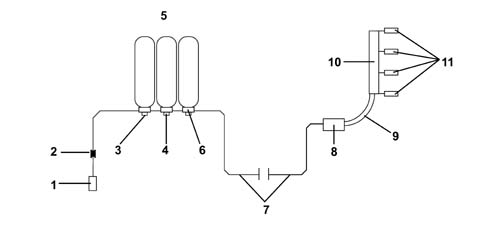

1058C Methane high pressure circuit leakage test
- Path
- Test > 10 ENGINE > 1058 CNG FUEL SYSTEM > 1058C Methane high pressure circuit leakage test
- Kind
- test / check procedure
- Applies to
- all engines; all production periods; only with equipment: BIPOWER
- Interactive page
- https://sloeber94.github.io/elrnDB-fDbl/en/#/2585347
Applies to: all engines; all production periods; only with equipment: BIPOWER
The test should take place in an ambient where there are no sudden variations in temperature.
Transfer the vehicle to a special pneumatic test area.
Close the methane canister manual valves so that they are excluded from the circuit.
Connect the Examiner to the methane control unit and enter the 'Parameters' ambient to read the high pressure value.
Wait for 3 minutes and then take the pressure reading again. The final pressure value should not differ from the value read (0 - 1 bar).
If the initial value has changed, continue the check for another 3 minutes.
If the pressure continues to fall, use the leak detector or a foam solution to check the joins (points 1-2-3-4-5-6-7-8 in the enclosed diagram).
Replace the faulty components and recheck the seal.
With the circuit pressurized, check the low pressure pipes and the circuit: (points 9-10-11 in the enclosed diagram).
Replace the faulty components and check again that the connectors that were leaking are closed and repeat the leakage test.

Applies to: all engines; all production periods; only with equipment: BIPOWER
1 - Pressurizing filler complete with one-way valve and safety cap
2 - High pressure pipe connector
3 - One-way valve fitted on the solenoid valve
4 - Cut out solenoid valve on the canister complete with manual cut out valve
5 - Canisters
6 - Seal between canister and solenoid valve
7 - Coated steel pipe 4 x 6
8 - Pressure regulator/reduction unit complete with pressure sensor and cut out solenoid valve
9 - Flexible pipe
10 - Methane fuel manifold
11 - Methane injectors